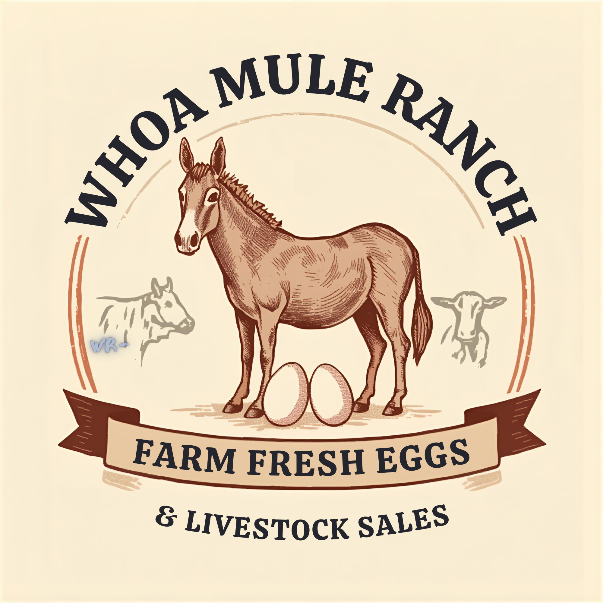
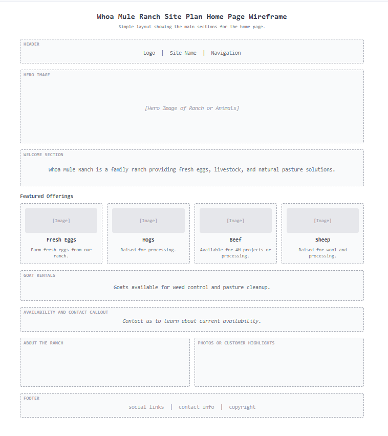
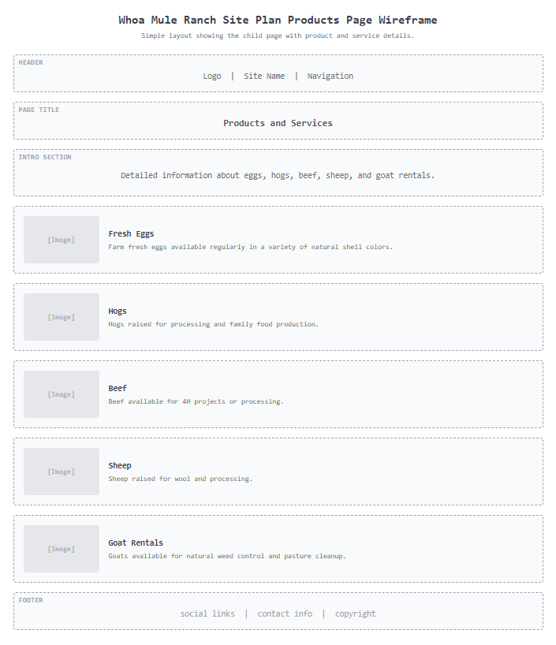

Overview
Purpose
The purpose of this website is to share information about Whoa Mule Ranch and the products and services our family provides. It will help visitors learn about our ranch and connect with us for fresh eggs, livestock, wool, and goat pasture services.
Audience
The intended audience is local families, farmers, ranchers, and community members who are interested in farm fresh products or livestock services. This includes people looking for eggs, animals for 4 H projects, livestock for processing, wool, or goats for natural weed and pasture control.
Dynamic elements
JavaScript will be used to display ranch offerings and make the site interactive. The site will include an array of objects that store information about products and animals. Users will be able to click buttons or filters to view different categories such as eggs, beef, hogs, sheep, and goats. The site will use DOM interaction to update what is shown on the page, event listeners for user clicks, and conditionals to display messages such as availability or sold out items.
Branding
Website Logo

Style Guide
Color Palette
Palette URL: https://coolors.co/2f5d50-d97a4a-f4efe6-1f2933-8b5e3c| Primary | Secondary | Accent 1 | Accent 2 |
|---|---|---|---|
| #2F5D50 | #D97A4A | #F4EFE6 | #1F2933 |
Typography
Heading Font: Georgia
Paragraph Font: Arial
Normal paragraph example
Whoa Mule Ranch is a family run ranch focused on raising quality animals and providing helpful services to the local community. We take pride in caring for our animals and providing products that families can trust and enjoy.
Colored paragraph example
Our ranch offers a variety of products and services including fresh eggs, livestock, wool, and goat rentals for pasture and weed control. We work hard to make sure everything we provide is done with care and attention.
Navigation
Content
Home page
Headline: Welcome to Whoa Mule Ranch Intro text: Whoa Mule Ranch is a family ranch providing fresh eggs, livestock, and natural pasture solutions. We raise animals with care and enjoy serving our local community through quality ranch products and helpful services. Featured sections: Fresh Eggs, Hogs, Beef, Sheep, Goat Rentals Call to action: Contact us to learn about current availability. Images: 4 images
Products
Fresh Eggs: Farm fresh eggs available regularly in a variety of natural shell colors. Hogs: Hogs raised for processing and family food production. Beef: Beef available for 4 H projects or processing. Sheep: Sheep raised for wool and processing. Goat Rentals: Goats available for natural weed control and pasture cleanup. Images: 5 images
Wireframes
Two wireframes are included, one for the home page and one for the products page.
Home
The Home page gives a quick look at the ranch, what we offer, and how to contact us. It helps visitors know what we do and where to go next.

[Page 2]
The Products page will show detailed information for each item or service offered by the ranch. Each section will include an image, a short description, and what the product or service is used for. Items will be grouped clearly so users can easily find eggs, hogs, beef, sheep, and goat rentals. This page will also help users understand availability and what to expect when contacting the ranch.
